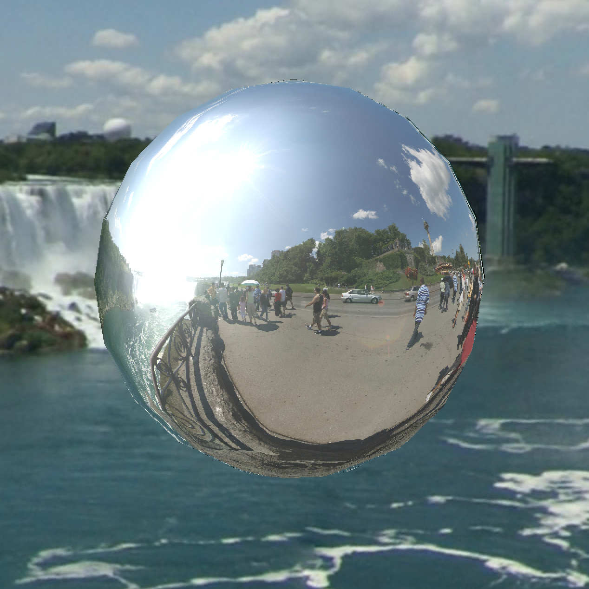
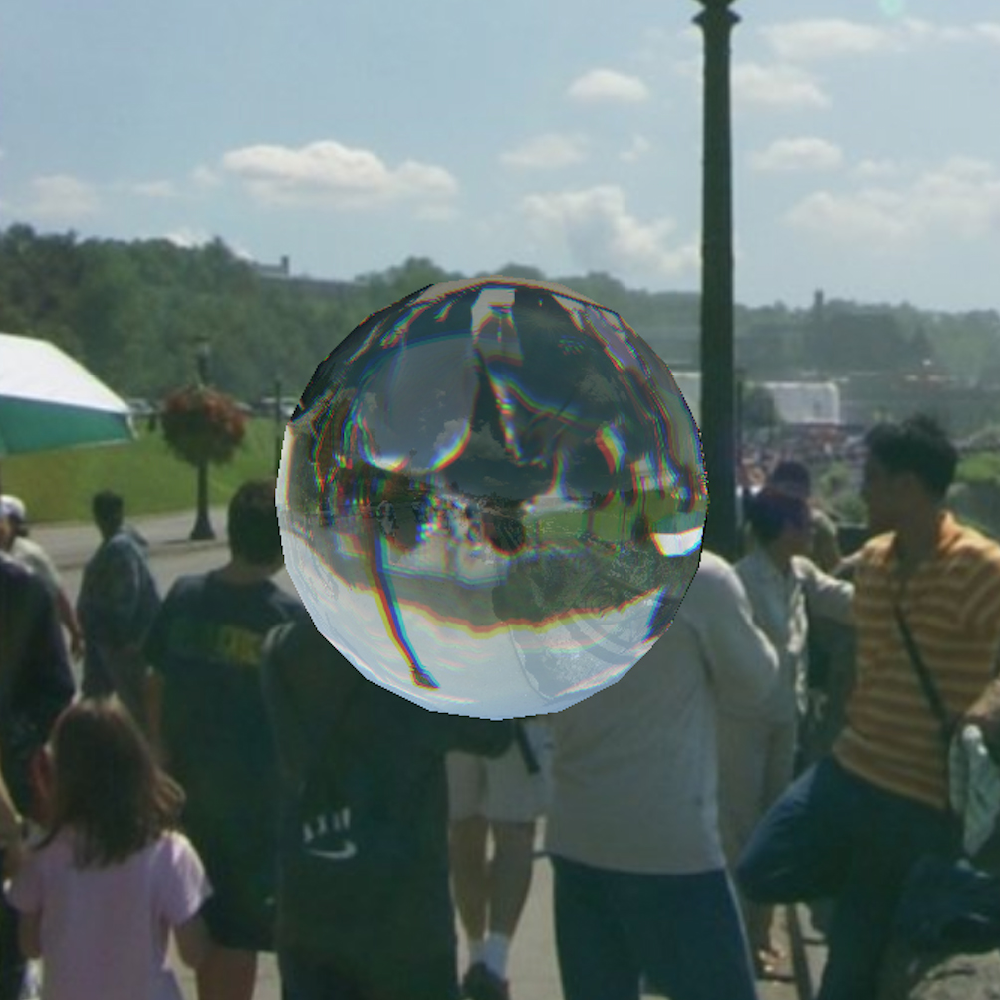
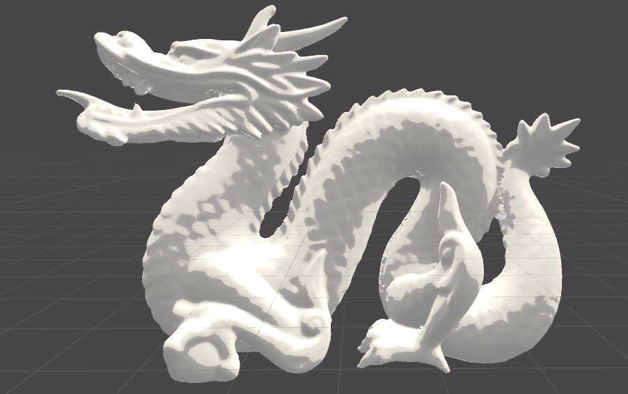
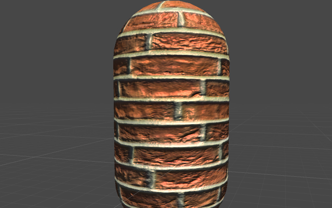

Type: Computer graphics, Shader
Description: Have fun with shaders! Still learning and growing!
Tools: GLSL, Unity ShaderLab
●I wrote a glass shader and a metal shader which implement the Cook-Torrance lighting model using Fresnel's equations for reflection and refraction.
 ●This animated heart shader is learned from Inigo Quilez's work.
●Unity shader practice.
 